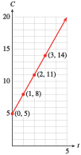
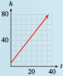

Subsection 2.1 Tables, Graphs and Equations
The first step in creating a model is to describe relationships between variables. In Investigation 2.0.1, we analyzed the relationship between Delbert's sales and his income. Starting from a verbal description, we represented the relationship in three different ways.
A table of values displays specific data points with precise numerical values.
A graph is a visual display of the data. It is easier to spot trends and describe the overall behavior of the variables from a graph.
An algebraic equation is a compact summary of the model. It can be used to analyze the model and to make predictions
We begin our study of modeling with some examples of linear models. In the examples that follow, observe the interplay among the three modeling tools, and how each contributes to the model.
Example 2.1.1.
Annelise is on vacation at a seaside resort. She can rent a bicycle from her hotel for $3 an hour, plus a $5 insurance fee. (A fraction of an hour is charged as the same fraction of $3.)
Make a table of values showing the cost, \(C\text{,}\) of renting a bike for various lengths of time, \(t\text{.}\)
Plot the points on a graph. Draw a curve through the data points.
Write an equation for \(C\) in terms of \(t\text{.}\)
-
To find the cost, we multiply the time by $3, and add the result to the $5 insurance fee. For example, the cost of a 1-hour bike ride is
\begin{align*} \text{Cost}\amp=(\$5\text{ insurance fee})+(\$3\text{ per hour})\times(\alert{1}\text{ hour})\\ C\amp=5+3(\alert{1})=8 \end{align*}A 1-hour bike ride costs $8. We record the results in a table, as shown here:
Length of rental (hours) Cost of rental (dollars) \((t,C)\) \(1\) \(8\) \(C=5+3(\alert{1})\) \((1,8)\) \(2\) \(11\) \(C=5+3(\alert{2})\) \((2,11)\) \(3\) \(14\) \(C=5+3(\alert{3})\) \((3,14)\) Each pair of values represents a point on the graph. The first value gives the horizontal coordinate of the point, and the second value gives the vertical coordinate. The points lie on a straight line, as shown in the figure. The line extends infinitely in only one direction, because negative values of \(t\) do not make sense here.
-
To write an equation, we let \(C\) represent the cost of the rental, and we use \(t\) for the number of hours:
\begin{align*} \text{Cost}\amp=(\$5\text{ insurance fee})+(\$3\text{ per hour})\times\text{(number of hours)}\\ C\amp=5+3\cdot t \end{align*}
Example 2.1.2.
Use the equation \(C=5+3\cdot t\) you found in Example 2.1.1 to answer the following questions. Then show how to find the answers by using the graph.
How much will it cost Annelise to rent a bicycle for 6 hours?
How long can Annelise bicycle for $18.50?
-
We substitute \(t=\alert{6}\) into the expression for \(C\) to find
\begin{equation*} C=5+3(\alert{6})=23 \end{equation*}A 6-hour bike ride will cost $23. The point \(P\) on the graph in the figure represents the cost of a 6-hour bike ride. The value on the \(C\)-axis at the same height as point \(P\) is 23, so a 6-hour bike ride costs $23.
We substitute \(C=\alert{18.50}\) into the equation and solve for \(t\text{.}\)
\begin{align*} \alert{18.50}\amp=5+3t\\ 13.50\amp=3t\\ t\amp=4.5 \end{align*}For $18.50 Annelise can bicycle for 4½ hours. The point \(Q\) on the graph represents an $18.50 bike ride. The value on the \(t\)-axis below point \(Q\) is 4.5, so $18.50 will buy a 4.5 hour bike ride.

Note 2.1.3.
In Example 2.1.2, notice the different algebraic techniques we used in parts (a) and (b).
In part (a), we were given a value of \(t\) and we evaluated the expression \(5+3t\) to find \(C\text{.}\)
In part (b) we were given a value of \(C\) and we solved the equation \(C=5+3t\) to find \(t\text{.}\)
Checkpoint 2.1.4.
Frank plants a dozen corn seedlings, each 6 inches tall. With plenty of water and sunlight they will grow approximately 2 inches per day. Complete the table of values for the height, \(h\text{,}\) of the seedlings after \(t\) days.
| \(t\) | \(0\) | \(5\) | \(10\) | \(15\) | \(20\) |
| \(h\) |

Write an equation for the height of the seedlings in terms of the number of days since they were planted.
Graph the equation.
\(h = 6 + 2t\)
- 
Checkpoint 2.1.5.
Use your equation from Checkpoint 2.1.4 to answer the questions. Illustrate each answer on the graph.
How tall is the corn after 3 weeks?
How long will it be before the corn is 6 feet tall?